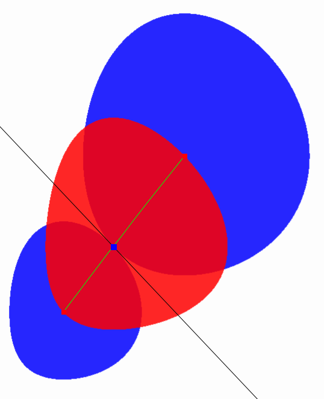

<h1>Media</h1>

Below are some media files (images, video, pdf, etc.) to illustrate various concepts.<BR>
<BR>

<h2>Video</h2>

<ul>
<li><A HREF="ChernoffInformationDualBall.mp4">ChernoffInformationDualBall.mp4</A>: Chernoff information (eKL) with dual balls of radius the Chernoff information.
</ul>

<HR>

<table style="width:100%" border=1 frame=void rules=rows>
  <tr>
    <th style="width:20%">Concept</th>
    <th>File(s)</th>
    
  </tr>
  <tr>
    <td>Chernoff information:<BR></td>
    <td>
	<A HREF="ChernoffEKL-1.png">ChernoffEKL-1.png</A>
	<A HREF="ChernoffEKL-1.png">ChernoffEKL-2.png</A>
	<A HREF="ChernoffEKL-1.png">ChernoffEKL-3.png</A>
	<A HREF="ChernoffEKL-1.png">ChernoffEKL-4.png</A>
	<A HREF="ChernoffEKL-1.png">ChernoffEKL-5.png</A>
	<A HREF="ChernoffEKL-1.png">eKLminiball-5pts-3pts-basis.png</A>
	
	</td>
     
  </tr>
  <tr>
    <td>Bregman Voronoi diagram:<BR></td>
    <td>...</td>
    
  </tr>
  <A HREF="LorentzBicone.mp4">LorentzBicone.mp4</A>
  
</table>


<HR>